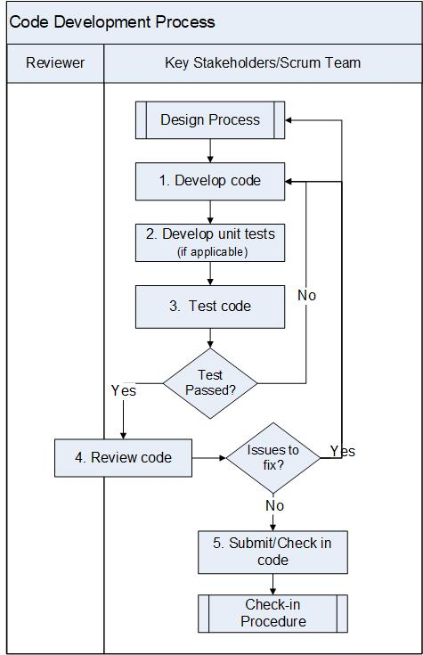

Code Development Process¶
This process describes how product code is developed.
Entry Criteria |
|
Inputs |
|
Exit Criteria |
|
Outputs |
|
Stakeholders¶
Role |
Responsibilities |
Scrum Team |
Scrum team includes Technical Feature Owner, Engineering Manager (Development & Test), Development Engineer, Test Engineer, Information Development Engineer. Responsible for:
|
Activities¶

Step # |
Activity Name |
Description |
|---|---|---|
1 |
Develop Code |
Using Stories and designs as inputs, Developers write code according to coding standards and design according to the HLDs if available, run static code analysis(e.g., Coverity), and also address compiler warnings and fix defects. |
2 |
Develop unit tests |
Developers write unit tests to generate code. See Development (Unit) Testing Process. |
3 |
Test code |
Developers perform the unit and any applicable regression tests and fix defects. |
4 |
Review code |
Developers review code and ensures full traceability according to the Peer Review Procedure using Code Collaborator. If the review finds code issues, Developer fixes issues found in the review, retest, and re-review the fixed code. If the review finds problems with existing design, Developers return to the Design Process. During the review, the Technical Feature Owner and Developer may determine a design (if one not already avaialble) is necessary to review the code. Technical Feature Owner or Developer creates a HLD according to the Design Process. |
5 |
Submit/Check in code |
Developers submit/check in code according to the Check-in Procedure. The relevant Stories and Tasks are marked completed. |
Change Log¶
Date |
Change Request ID |
Version |
Change By |
Description |
04/30/2020 |
N/A |
0.1 |
Shree Vidya Jayaraman |
Initial Draft |
06/10/2020 |
N/A |
0.2 |
Shree Vidya Jayaraman |
Update based on Kitty’s feedback |
06/22/2020 |
N/A |
0.3 |
Shree Vidya Jayaraman |
Update based on Kitty’s feedback |
07/01/2020 |
N/A |
0.4 |
Shree Vidya Jayaraman |
Update based on Kitty’s feedback |
07/22/2020 |
N/A |
0.5 |
Shree Vidya Jayaraman |
Update based on Kitty’s feedback |